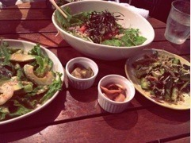

| 2012/10 08 Mon | 254回目*marika |
いつも読んでくださってる方、
初めて読んでくださった方、
コメントしてくださった方
ありがとうございます。
今日は4thに向けてのレッスンでした！
やっと気温も秋らしくなってきたー！
秋の空気すき。
しかしメンバー内で風邪が
流行ってきてるので気をつけなきゃ。
みなさんも風邪ひかないよう
からだあっためてくださいね><
...
学校の文化祭でね、
お手伝いしたんだ！

(勝手に作った)
久しぶりに文化祭らしいことして
すごい楽しかった
 ♪
♪
♪
あと、この前仲良しの友達と
ご飯食べてきた！

サラダだらけ‼笑
野菜たっぷりでヘルシー

女の子が喜ぶ
最近アボカドとトマトに
反応するようになってきた。
前は苦手だったのに...
食べられるようになったどころか
すきになった

今苦手な、貝ときのこも
いつかすきになるのかなぁ？
...
コメントありがとうございました。
全部読みました。
あたたかいです。
こんなにたくさんの方々に支えされて
私は本当に幸せなやつです。
まだ未完成です。
まだ華は小さいです。
それでも私は、
自信をもって私らしく前を向きます！

へにゃ

こんな顔するのだって、私。
まりか
コメント(243)
2012/10/08 22:06